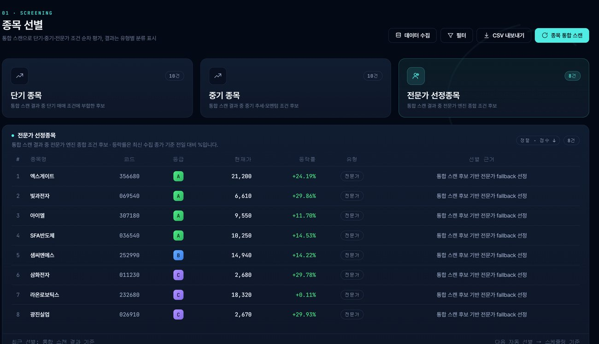
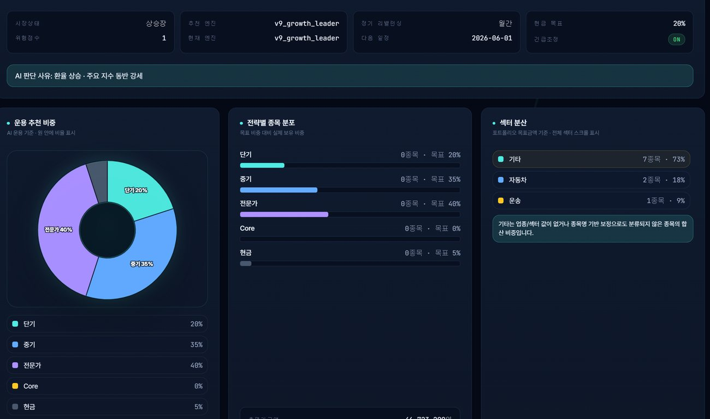

상태 확인 지연
계좌, API, 보유종목, 주문 상태를 따로 확인하면 대응이 늦어집니다.
문제는 정보가 부족해서만 생기지 않습니다. 여러 화면을 오가며 상태를 확인하는 과정, 기준 없는 매매, 기록되지 않는 판단이 반복되면서 운용 품질이 흔들립니다.
계좌, API, 보유종목, 주문 상태를 따로 확인하면 대응이 늦어집니다.
손절, 익절, 비중 기준이 정리되지 않으면 매매 판단이 흔들립니다.
후보 종목과 조건을 수동으로 추적하면 집중력이 분산됩니다.
체결, 실패, 사유 기록이 남지 않으면 다음 전략 점검이 어렵습니다.
Alpha Viper는 단일 신호가 아니라 운용 절차를 정리하는 시스템입니다. 데이터, 후보군, 주문계획, 자동 감시, 로그가 끊기지 않게 연결됩니다.
시세와 거래 데이터 갱신
단기·중기·전략 후보 정리
비중과 리스크 기준 확인
조건 충족과 주문 흐름 추적
체결·실패·성과 로그 보관


도시적인 다크 블루 톤과 정리된 카드 구조를 적용해 운용 상태를 빠르게 읽을 수 있도록 구성했습니다. 핵심 수치, 상태, 로그가 우선 보이고 세부 설정은 필요한 단계에서 확인합니다.
단기, 중기, 전략 후보군을 분류해 운용 전 검토 대상을 명확히 합니다.
주문계획과 설정 조건을 기준으로 시장 상태를 지속적으로 확인합니다.
손절, 익절, 비중, 주문 한도를 운용 전에 점검하는 구조를 둡니다.
체결, 실패, 설정 변경 기록을 남겨 사후 점검과 개선에 활용합니다.
제품 소개, 설치 지원, 고객 패키지 제공, 라이선스 발급 문의